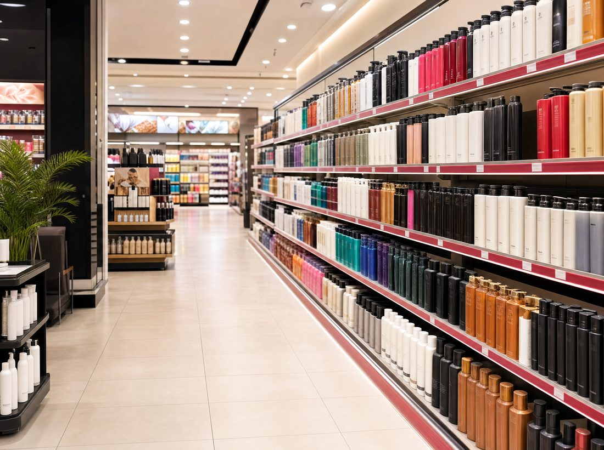
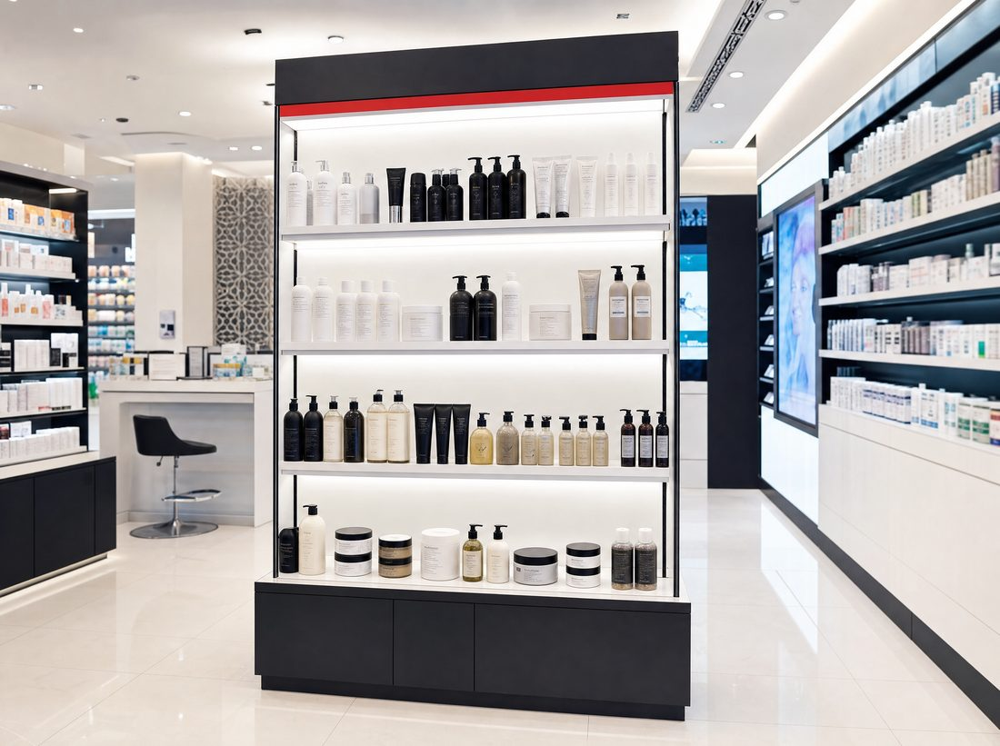
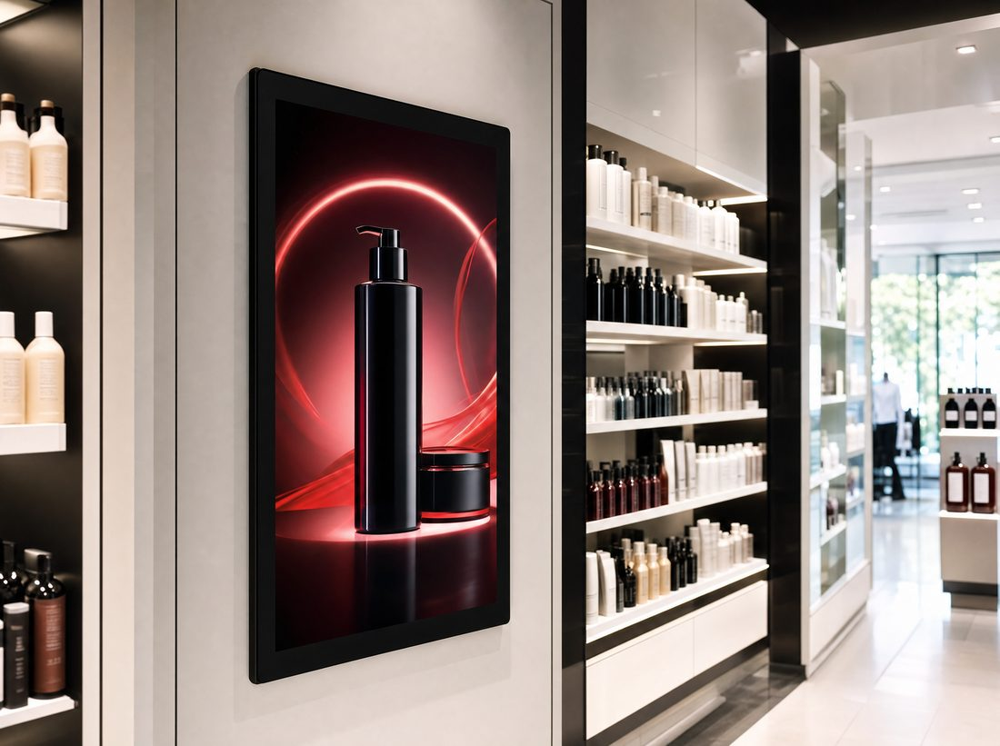

From the shelf → to the scroll

The shelf · Perfect Store in Modern Trade The scroll · quick-commerce on Talabat & Noon Minutes
The scroll · quick-commerce on Talabat & Noon MinutesSchwarzkopf · GCC Shopper Activation
One shopper. Two worlds. The hypermarket aisle and the Talabat app — in the same afternoon. Shelf to Story makes Schwarzkopf unmissable in both, with one connected Perfect Store across every shelf the GCC shopper meets.
Hypermarket aisle, pharmacy fixture, marketplace PDP, quick-commerce tile — a single GCC hair-care journey now spans all four, often in one day. The shopper doesn't choose a channel. They choose a moment. Schwarzkopf has to be Perfect in every one of them.
From the shelf → to the scroll

The shelf · Perfect Store in Modern TradeThe scroll · quick-commerce on Talabat & Noon MinutesThe activation
Benefit-blocked planogram, hero-SKU 100% availability and one quarterly secondary display — built into the Carrefour/MAF & Lulu JBP.
Modern Trade
Premium repair range (BC Bonacure) with trained recommendation and a gift-with-purchase at the till in BinSina, Aster & Life.
Pharmacy
Hero PDPs with A+ content and review health on Noon & Amazon.ae, fighting for search share on "anti-frizz" and "hair repair".
E-tailImpulse bundles and a delivery-countdown deal on Talabat & Noon Minutes — turning the same shopper's idle moment into trial.
Quick-commerce
Always-on sponsored search synced to the in-store promo grid, so the shelf and the screen push in exactly the same direction.
Retail Media
Short-form GCC creators demo salon results with shoppable codes that drop straight into the quick-commerce basket.
InfluencerHow we'd measure it